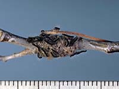

Forest Tent Caterpillar
Jack Pine Budworm
Spruce Budworm
Mountain Pine Beetle
There are many insect pests in Saskatchewan forests. Some are local phenomenon and easily contained and treated, and there are some that are more prevalent throughout the province, and which many people are familiar with. |
The major insect pests found here include:
- Forest Tent Caterpillar
- Jack Pine Budworm
- Spruce Budworm
- Mountain Pine Beetle
This insect infests aspen trees. Tree growth is reduced but death rarely occurs. Recreation areas suffer when heavy infestations keep people away. Chemical and biological controls may be used in these areas. Cool spring weather or lack of food normally control this pest. The image on the left shows the insect's cocoon. |
This is a mature Forest Tent Caterpillar (FTC) moth with recently deposited eggs. |
 Here we see newly hatched caterpillars. |
FTC larvae have enormous appetites. |
FTC larvae can occur in very large numbers. |
As the name implies, jack pine is the preferred species of this insect but other pine species are also attacked. Feeding on needles occurs in June and July, giving trees a scorched look and reducing vigor. Repeated attacks deform trees and can eventually kill them. |
Weather, parasites and predators are the main controls. In high value forests insecticides and biological controls may be used. This is a Jack Pine Budworm (JPB) moth. |

JPB larvae are efficient eating machines. |

Balsam fir is the desired species but white spruce is also attacked. Feeding occurs in the spring and all the new foliage can be lost during heavy outbreaks. Death can occur after five consecutive years of feeding. |

Harvesting infested trees and cool, damp spring weather help to reduce budworm numbers. Chemical and biological controls are used in large outbreaks in eastern Canada. To the left you can see the Spruce Budworm moth. |

Spruce Budworm eggs. |
This insect attacks older lodgepole pine where forest fires or logging have been absent. Attacks begin in July and repeated strikes over five to ten years can kill up to 80 per cent of the trees.
Pheromone (artificial sex attractant) baited traps and cold winters help to reduce beetle numbers. Selective logging and prescribed burning decrease the number of older more vulnerable trees.